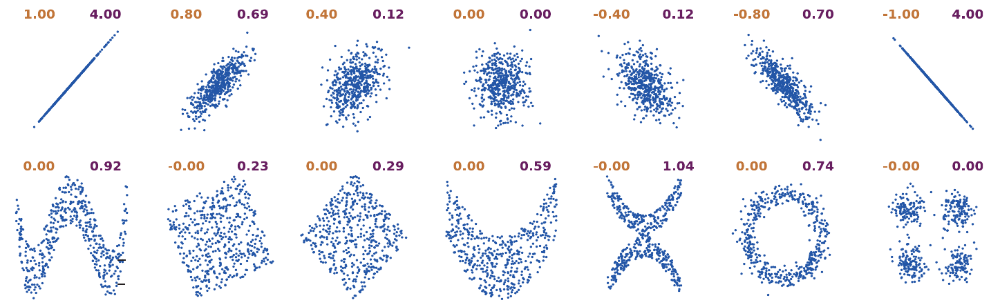
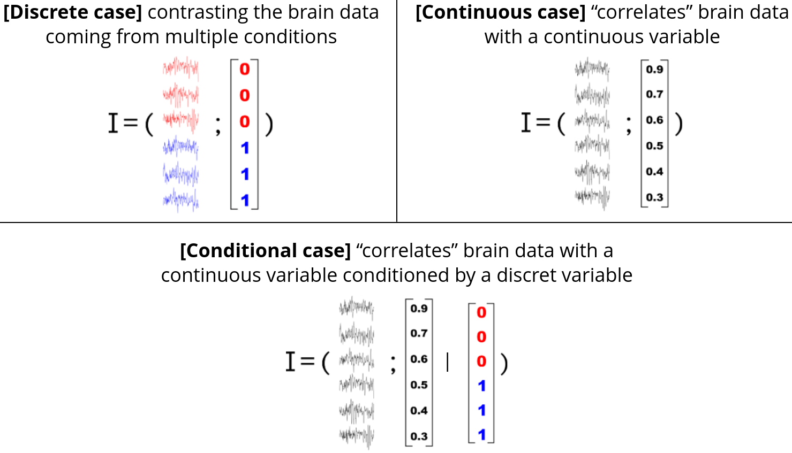
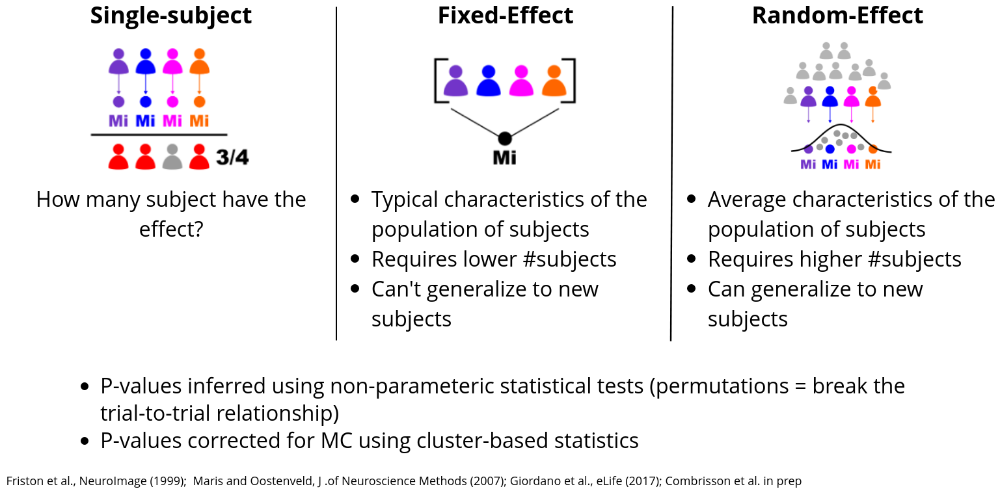

Methods#
In this section we are going to cover the basis of the methods used in Frites. In particular two main topics :
The use of information theoretical measures for brain data
The implemented statistical approaches
Note that this methodological overview has been written for scientists who are not necessarily familiar with information theory and statistics. Therefore, it is not going to contain the mathematics behind the implemented methods, but instead, the references to the papers in question.
Data analysis within the information theoretical framework#
The first question that could be asked is Why using the information theory to analyze brain data?
There are several advantages of using information theoretic measures. Here’s a non exhaustive list of the main advantages :
No assumption about the distribution of the data : standard IT measures (based on binning) are model-free in the sense that there’s no assumptions about how the data are distributed
Information theory as a unified framework of analysis : most of the statistical measures we used to analyze data (e.g correlation, machine-learning etc.) have a equivalent using IT metrics. This means that in theory it is possible to analyze the data from A-Z within the IT framework
Support for any data type : by construction, IT measures support both continuous and discrete variables such as univariate and multivariate.
On the other hand, IT measures also present some disadvantages :
Standard approaches usually require large data : indeed, methods based on binning need to evaluate the probability distribution (e.g the probability that your data take values between [-1, 1]). And the larger the data, the better the estimation. In addition, binning based IT measures suffer from the curse of dimensionality.
Strictly positive measures : IT measures returned the amount of information that is shared between two variables (in bits). And this quantity is superior or equal to zero. As an example, two variables might either be correlated or anti-correlated however, in both cases the amount of information is going to be strictly positive.
Computationally expansive : depending on the implementation, the evaluation of the mutual information can be relatively slow

Correlation (orange) vs. strictly positive Mutual information (purple). Extracted from Ince et al. 2017 [12]#
Gaussian Copula Mutual Information#
In Frites we use a special type of mutual information that has been carried recently to neuroscience (see Ince et al 2017 [12]) : the Gaussian Copula Mutual Information (GCMI).
The GCMI provide an estimation of the mutual information without the necessity of binning the data. In addition to this point, the GCMI is really fast to compute which makes this method a good candidate when it comes to performing numerous permutations for the statistics. However, the GCMI make the assumption that there’s a monotonic relation between the two variables (i.e if one variable is increasing, the other should also increase or decrease but not both).
The different types of mutual information#
In this section we are going to make the difference between two types of variables :
Discrete variables : discrete variables are composed with integers where each number can for example refer to an experimental condition (e.g 0={all the trials that belong to the “go” stimulus} and 1={all the trials that belong to the “nogo” stimulus})
Continuous variables : continuous variables are made of floating points. Therefore, the brain data are considered as a continuous variable.
With this in mind, the figure bellow summarizes the different types of mutual information :

Top left : continuous / discrete case (I(C; D); mi_type='cd') for contrasting two experimental conditions (e.g two visual stimulus); Top right continuous / continuous case (I(C; C); mi_type='cc') for correlating the brain data with, for example, a model of the behavior (e.g Prediction Error / Learning); Bottom continuous / continuous | discrete case (I(C; C | D); mi_type='ccd') for correlating the brain data with a continuous while removing the influence of a discrete variable (e.g experimental conditions)#
Equivalence with other statistical measures#
Find bellow the table showing the equivalence between information theoretic quantities and other statistical measures. Extracted from Ince et al. 2017 [12]
Information theoretic quantity |
Other statistical approaches |
|---|---|
MI (discrete; discrete) |
|
MI (univariate continuous; discrete) |
|
MI (multivariate continuous; discrete) |
|
MI (univariate continuous; univariate continuous) |
|
MI (multivariate continuous; univariate continuous) |
|
MI (multivariate continuous; multivariate continuous) |
|
Conditional mutual information |
|
Directed information (transfer entropy) |
|
Directed feature information |
|
Interaction information |
|
References#
Statistical analyses#
In addition to the evaluation of the amount of information shared between the data and a feature (stimulus / behavior), Frites also contains a statistical pipeline to evaluate whether an effect can be considered as significant.
Subject and group-level statistical inferences#
From a statistical standpoint, Frites gives the possibility to draw inferences either at the subject-level either at the group-level :
Subject-level : the measures of informations and the p-values are computed per-subject. At the end, you can get the number (or proportion) of subjects that have the effect. This can be particularly useful when working with sEEG data where the number of subjects per brain regions might be different.
Group-level : draw conclusions about a population of subjects. This group-level section is subdivided into two group-level strategies :
Fixed Effect (FFX) : the mutual information is estimated across subjects. By concatenating the subjects, you make the hypothesis that the effect is quite reproducible and stable across your population of subjects. One advantage of the FFX is that it usually requires a lower number of subjects and provides a good sensibility as soon as the hypothesis of stable effect across subjects is verified. On the other hand, two disadvantages are that, first you don’t take into account the inter-subject variability and second, the inferences you are allow to make only concern your population of subjects. It can’t generalize to new subjects
Random Effect (RFX) : the mutual information is estimated per subject and then a model of how the effect is distributed across the subjects is made. To be more precise, we make the assumption that the effect is normally distributed across the subjects. Advantages and disadvantages are basically the opposite of the FFX. The RFX takes into consideration the inter-subject variability which make it more suitable to detect the effect if this effect is slightly different from subject to subject. Building a model based is like considering that our population is in fact a sub-group of a broader population which, in other terms, means that if new subjects are included in the analysis, the estimations of mutual information should still be included in the model. However, the main disadvantage of the RFX is that it requires more subjects to build a reliable model.

Subject and group-level statistics on information-based measures#
Correction for multiple comparisons#
Internally, we used permutations in order to estimate the distribution of mutual-information values that could be obtained by chance and also, to correct the p-values for multiple comparisons. There’s three ways to correct the p-values, all using MNE Python : 1) cluster-based statistics (default), 2) maximum statistics and 3) FDR. About the cluster-based, since some electrophysiological recordings don’t have a spatial contiguity (like sEEG), the clusters are detected across time-points or across time-frequency maps. Note that you can also use the Threshold Free Cluster Enhancement (TFCE) still through MNE.